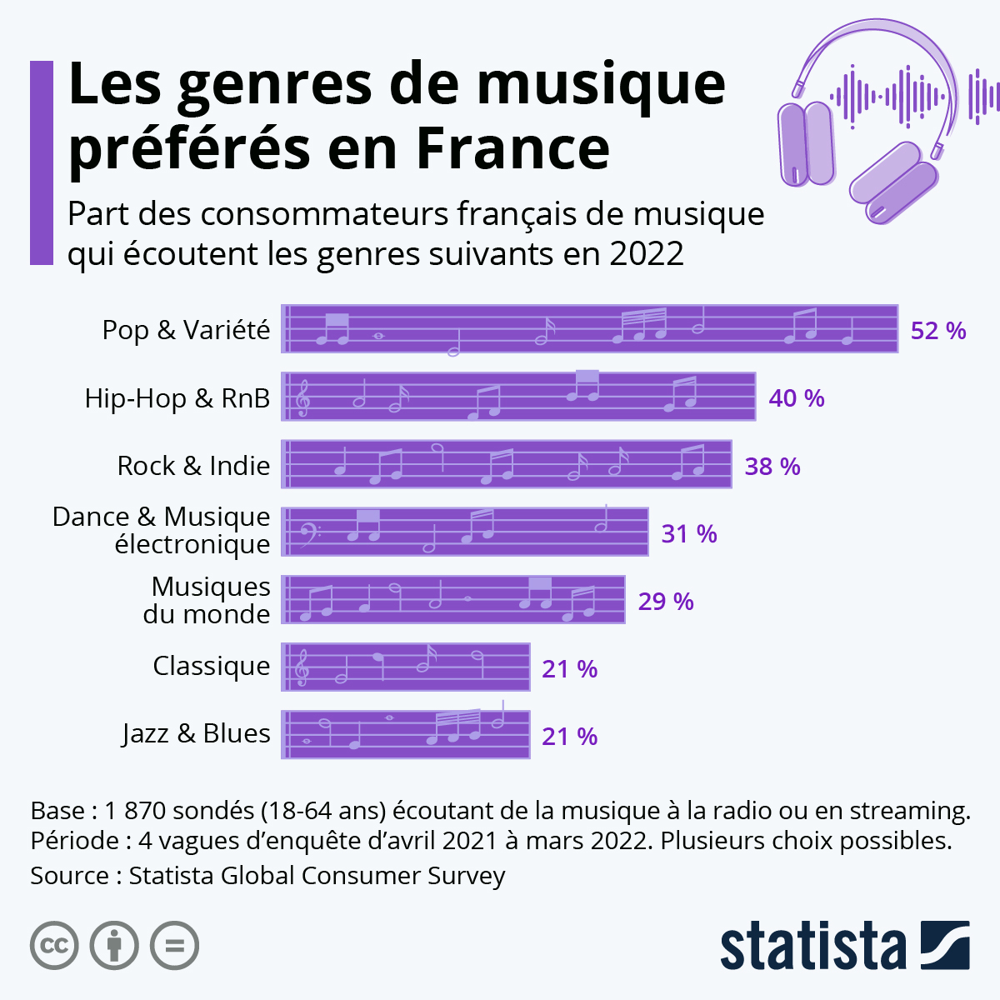

 Comme le montre le graphique ci-contre, la Pop et la Variété sont les deux genres musicaux les plus écoutés en France, formant à eux seuls un taux égal à 52% durant l'année 2022, selon Statista.
Le genre musical est un classement qui permet de donner une catégorie à la musique.
Il y a les grands genres, comme le Classique ou le Moderne et des sous-genres, c'est-à-dire des genres plus précis à l'intérieur d'un genre plus général, comme la Pop ou le RnB.